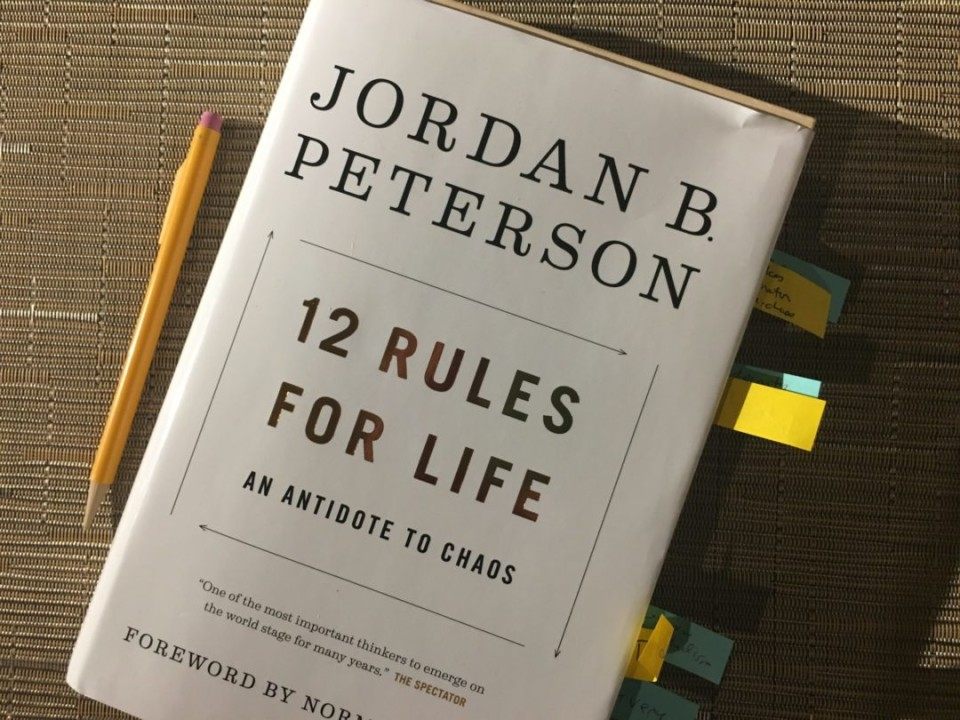
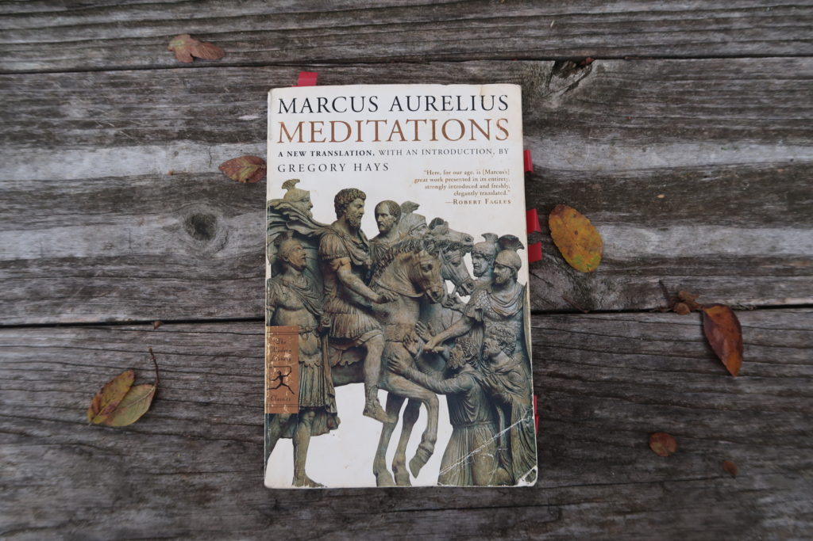
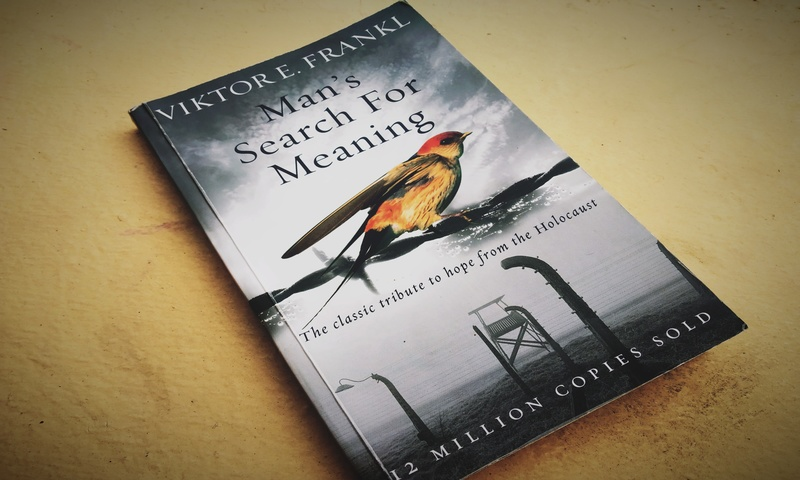

Jordan Peterson may be the only clinical psychologist who believes that psychology is subordinate to philosophy and the one thing that psychology and philosophy both genuflect before is story. Story, or myth, predates religion and is, in fact, as old as language itself.
12 Rules for Life: An Antidote to Chaos is more affordable for sure, but only slightly more accessible.
1. 12 Rules for life
Jordan Peterson may be the only clinical psychologist who believes that psychology is subordinate to philosophy and the one thing that psychology and philosophy both genuflect before is story. Story, or myth, predates religion and is, in fact, as old as language itself.
12 Rules for Life: An Antidote to Chaos is more affordable for sure, but only slightly more accessible.

In many important ways, the reflections of Marcus Aurelius (121 AD-180 AD) crystallize the philosophical wisdom of the Greco-Roman world. This little book was written as a diary to himself while emperor fighting a war out on the boarder of the Roman Empire and today this book is known to us as The Meditations.
That these thoughts came from the most powerful man in the world.
2. Meditations
In many important ways, the reflections of Marcus Aurelius (121 AD-180 AD) crystallize the philosophical wisdom of the Greco-Roman world. This little book was written as a diary to himself while emperor fighting a war out on the boarder of the Roman Empire and today this book is known to us as The Meditations.
That these thoughts came from the most powerful man in the world.

Written by Austrian neurologist-psychiatrist and a Holocaust survivor Victor Frankl, this book is simple yet intense and reflective. Frankl is the founder of Logotherapy, a form of existential psychology. Awarded with several accolades, his books and talks are the most inspiring on finding meaning in life and in suffering. The book stands out extraordinarily as Frankl.
3. Man's Searching For Meaning
Written by Austrian neurologist-psychiatrist and a Holocaust survivor Victor Frankl, this book is simple yet intense and reflective. Frankl is the founder of Logotherapy, a form of existential psychology. Awarded with several accolades, his books and talks are the most inspiring on finding meaning in life and in suffering. The book stands out extraordinarily as Frankl.

4. Martin Eden
The semiautobiographical Martin Eden is the most vital and original character Jack London ever created. Set in San Francisco, this is the story of Martin Eden, an impoverished seaman who pursues, obsessively and aggressively, dreams of education and literary fame. London, dissatisfied with the rewards of his own success, intended Martin Eden as an attack on individualism and a criticism of ambition.

5. Sapiens, Homo Deus, 21 lessons
Yuval Noah Harari takes us on a thrilling journey through today’s most urgent issues. The golden thread running through his exhilarating new book is the challenge of maintaining our collective and individual focus in the face of constant and disorienting change. Are we still capable of understanding the world we have created?